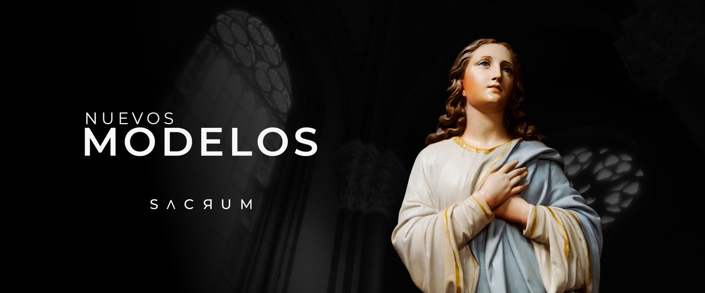
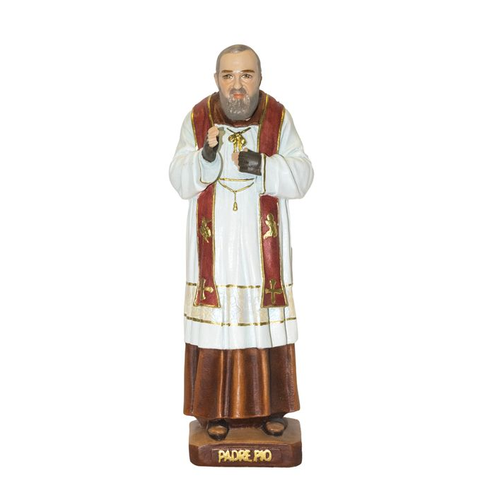
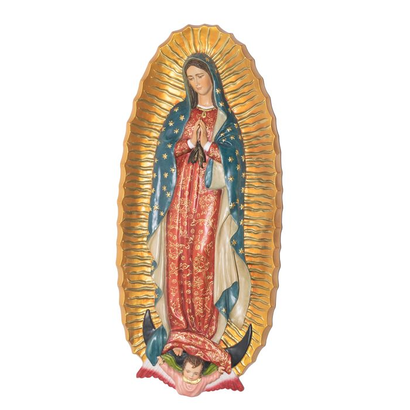
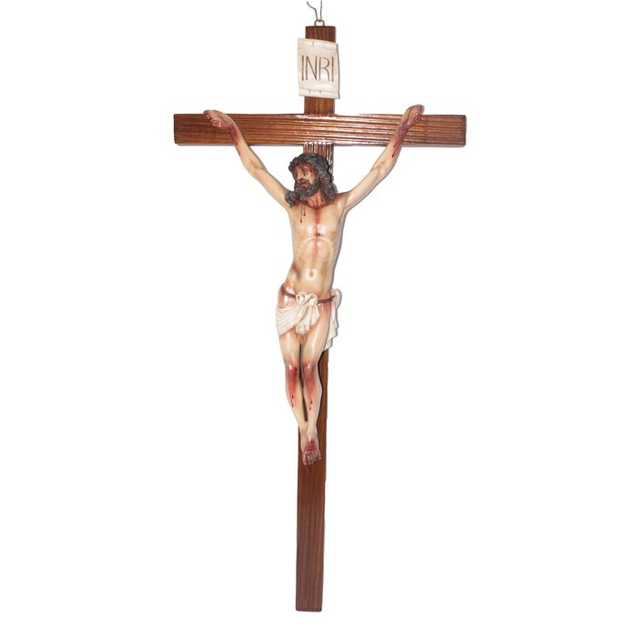
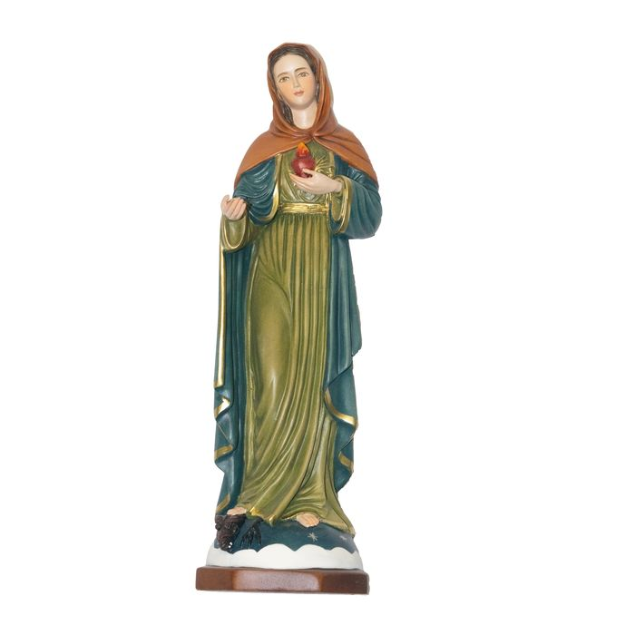
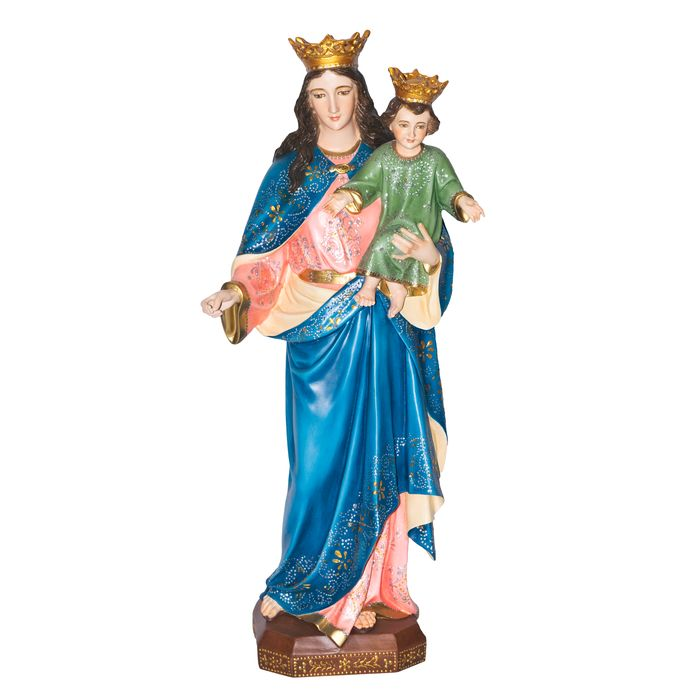
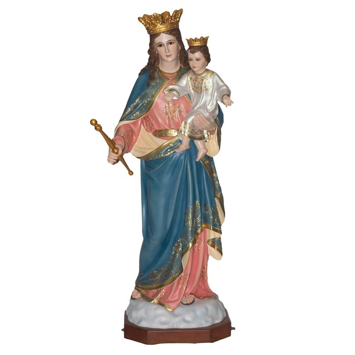

Esculturas religiosas y decorativas, esculpidas, pulidas y pintadas a mano por maestros artesanos ecuatorianos.






En Sacrum, cada escultura nace de las manos de maestros artesanos ecuatorianos que han dedicado su vida al oficio de esculpir fe y belleza. Elaboramos esculturas religiosas y decorativas, donde cada obra pasa por manos expertas que la moldean, la pulen y la pintan al detalle, imprimiendo un toque único e irrepetible que ninguna máquina puede replicar.
Con más de 30 años de experiencia, esa vocación artesanal ha evolucionado hacia Sacrum: una marca que honra ese legado con una mirada moderna, exigente y global. Hoy, manos ecuatorianas llevan nuestras esculturas a hogares, templos y colecciones alrededor del mundo.
Más de 30 años de oficio artesanal.
Atención al detalle en cada rostro, pliegue y acabado.
Entendemos el valor emocional de cada pieza.
Exportamos a hogares, templos y colecciones en todo el mundo.
Compra en stock, personalización, o un proyecto para tu comunidad.
ContáctanosVista previa de alta fidelidad con fotografía real de piezas Sacrum. El texto de Nosotros y Valores es el de la marca (confirmado); Proceso, Servicios y el catálogo completo (con los más de 240 productos reales enviados) se están integrando con el mismo estilo.